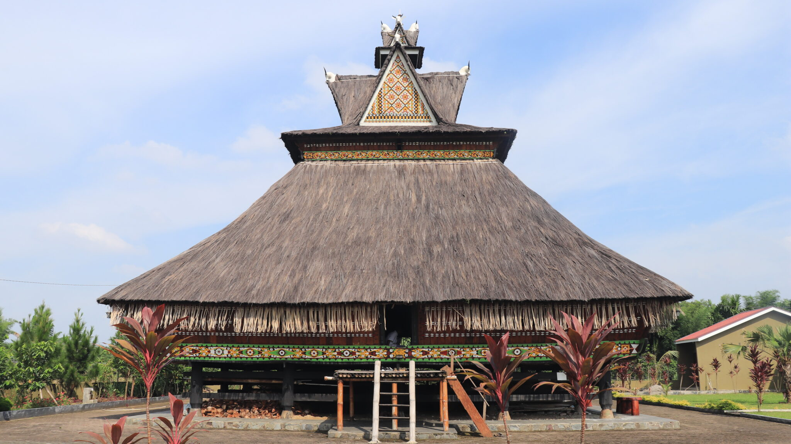

Siwaluh Jabu (disebut juga sebagai Siwaloh Jabu) adalah bentuk rumah tradisional masyarakat Batak Karo. Siwaluh Jabu merupakan rumah tinggal orang-orang Batak Karo pada zaman dahulu. Siwaluh Jabu menjadi bagian dari kehidupan orang Batak Karo.
|  | |
Siwaluh Jabu dibagi menurut bentuk atapnya dan dindingnya. Adapun jenis-jenis Siwaluh Jabu menurut atapnya adalah sebagai berikut:
Adapun jenis-jenis Siwaluh Jabu menurut dindingnya adalah sebagai berikut:
Sejarah Siwaluh Jabu terkait dengan masyarakat Batak Karo di Sumatera Utara, Indonesia, yang telah menggunakan jenis rumah ini sejak zaman dahulu. Siwaluh Jabu merupakan bentuk rumah tradisional yang mencerminkan nilai-nilai budaya dan adat masyarakat Batak Karo. Rumah ini memiliki desain khas, dengan atap melengkung dan struktur yang terbuat dari bahan alami seperti kayu dan daun rumbia, serta tidak menggunakan paku, melainkan tali untuk menyatukan bagian-bagiannya.
Siwaluh Jabu, rumah tradisional Batak Karo, dikenal dengan atap melengkung yang berbentuk pelana kuda dan struktur panggung yang dibangun di atas tiang-tiang kayu. Terbuat dari bahan alami seperti kayu, ijuk, dan daun rumbia, rumah ini tidak menggunakan paku, melainkan tali untuk menyatukan bagian-bagiannya. Ciri khas lainnya termasuk ukiran rumit yang menghiasi bagian luar dan dalam rumah, serta pembagian ruang yang spesifik untuk kepala keluarga, anak-anak, dan tamu. Tangga yang terletak di tengah rumah memerlukan penghuni atau tamu untuk menunduk saat masuk, menambahkan keunikan pada desainnya.